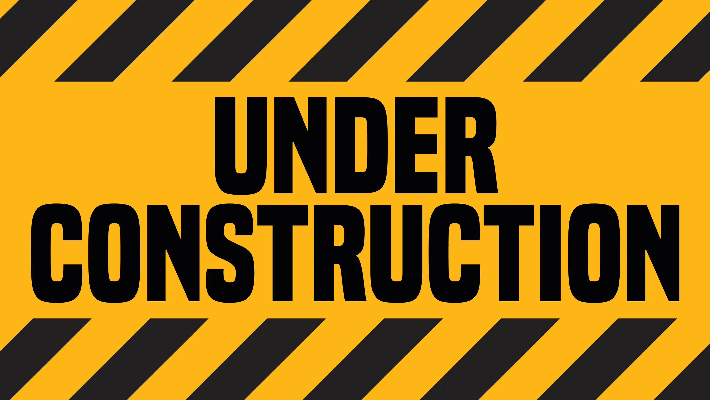

PROFESSIONAL EXPERIENCE
ENGINEER, PRODUCTION
TOP GLOVE SDN BHD FACTORY 23
Days since 2nd November 2020
Joined largest glove manufacturer in the world, as Engineer position in Production department, specializing in manufacturing, supply and distribution of polymer powder-free textured gloves.Played major role in core manufacturing department as:
As an Engineer
- Reported to Manufacturing Managers and Senior Engineers in execute engineering
improvement projects,
including:
- Polymer Timer Mini Pump Project
- Air Receiver Compressor Pressure Monitoring
Project

- Magnetic Holder Dirt Removal Project
- Alkaline Tanks Level Floater Project
- Troubleshoot on Industrial Automation devices, not limited to wiring temperature controller (Omron E5CC and 3-wire thermocouple Type-K), Proximity NPN sensors, 5/2 pneumatic valves and Servo Motors.
- Initiated Programmable Logic Board (PLC) projects with hands-on AC and DC wiring (MCB, RCCB, AC converter, main PLC) including terminal box design and I/O wire laying.
- Self-learning PLC Programming Language (Ladder Diagram), mainly with Keyence PLC, with
good
understanding of Coils and Input, plus add-ons modules including:
- Analog to Digital conversion (KV-N3AM)
- Serial communication RS232, RS485, Modbus RTU and Serial PLC link (KV-N11L)
- Ethernet/IP Communication
- Designed Human Machine Interface UI with Delta DOP107CV, to work with PLC projects, ex: improvement of Polymer Timer Mini Pump Project by eliminating physical timer and relay components.
- Converted production board to smartboard TV accessible from anywhere by self-written HTML and CSS language with Google Sheet Embedded, with paper usage eliminated and respective declaration using Google Form, including
- Minimized workload and mistakes at compounding department by creating online chemical calculator with JavaScript programming language.
{kind=link}
As a Manufacturing Line PIC
- Maximized output of production line to achieve target output KPI setting.
- Carried out adhoc troubleshooting with supervisors and leaders on glove and defects on-site to ensure good quality products.
- Conducted production whiteboard planning with major department (i.e. Compounding, Packing) weekly on Monday or on adhoc discussion urgent matters.
- Worked with Former department to maintain ceramic formers (glove dipping rice bowl)at 99.0% cleanliness.
- Focused Total Preventative Maintenance (TPM) with Maintenance department to improve and achieve 93.0% production line uptime (December 2022).
- Controlled manufacturing cost by carton (CPC) by boosting output while focused in reducing consumption of raw material (Latex), cleaning reagent and natural gas.
- Performed and lead mass scale trial run at production line with Research & Development (R&D) team.
- On-call during night, weekend and Public Holiday for production line breakdown and arrangement, reported to managers.
As a Production Staff
- Ensured quality product output to meet AQL and International Standards: ASTM D3578 Standard Specification for Rubber Examination Gloves EN455 European Standard for Medical Gloves.
- Maintained compliance of production department to meet:
- ISO 9001 Quality Management System (QMS)
- ISO 13485 QMS for Medical devices
- ISO 14001 Environmental Management System (EMS)
- Complied with ISO 45001 Occupational Health and Safety Management System, including renewing Hazard & Operability (HAZOP) study for production chemicals and equipments, reporting Unsafe Act Unsafe Condition (UAUC) to Safety Department.
- Good exposure to Emergency Response and First Aid Training, played a part of Factory Emergency Response Team.
- Involvement in Factory Customer Audit (Plant audit, On-site Inspection), Quality Audit (SIRIM, ISO) and Social Compliance Audit (BSCI, BSC) for documentation preparation and plant tour.
- Attended workers’ problem, such as attendance, OT arrangement during Public Holiday.
- Quality analysis and improvement using FMEA, 8D, Fishbone (Ishikawa), Five Whys.
- Assisted in Operational Qualification (OQ) and Performance Qualification (PQ) validation of production line yearly.
- Improved customer satisfaction by reduced customer complaint from 39 complaints (2019) to 13 complaints (2022).